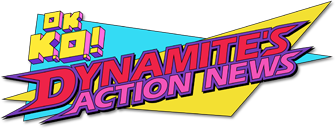

Jackson Lango
Programming / Art / Games / GitHub / Instagram
( This is a resume-styled writeup of my programming-related skills and projects. You can use the buttons below to highlight keywords on the page. )
Languages
Technologies
Projects
Game Development
OK K.O. Dynamite's Action News
( 2016-2017 ) Unity3D, C#, Mobile
After winning the Cartoon Network game jam competition with a 2-day prototype, our team (of which I am the sole programmer) contracted a full game with Cartoon Network.
Canvasser
Play Online ( 2012 – 2013 ) ActionScript

I designed and programmed this web-game about street fundraisers saving a forest from clearcutting loosely based on my own experiences.
Other Games And Prototypes
( 2006 – Present ) ActionScript, Unity3D, C#, JavaScript, C++, Python, Windows, Mobile
I developed and published 11 flash games online, the earliest in 2006.
I've taken part in many game jams, the results of which you can find on my games page.
TOCS Archive
( April 2015 – Present ) SQL, Python, SSIS, TFS, Visual Studio, SSMS, Windows
Created an archive process for four 1,000,000+ row tables in a MSSQL Server database using SQL and SSIS that is currently in production at ODOT. Lead a team of four with mentorship responsibilities through the next phase in a scrum-like environment to extend the process to more than 200 tables. Drafted requirements with clients and helped draft budget.
Concurrent SystemC
Source on Github ( September 2014 – May 2015 ) C++, Linux
Our team of three added concurrency to SystemC as our Oregon State senior capstone project for Intel. SystemC is an open-source C++ class library that is used to simulate systems and hardware.
Portfolio Website
Source on Github ( 2012 – Present ) JavaScript, HTML, CSS
I have continually created and recreated a portfolio website that focuses on my coding projects, game development and artwork. You're looking at the current iteration right now, which I made using Skeleton for the boilerplate and hilitor.js for the cool highlighting buttons at the top of the page. What do you think? ☺